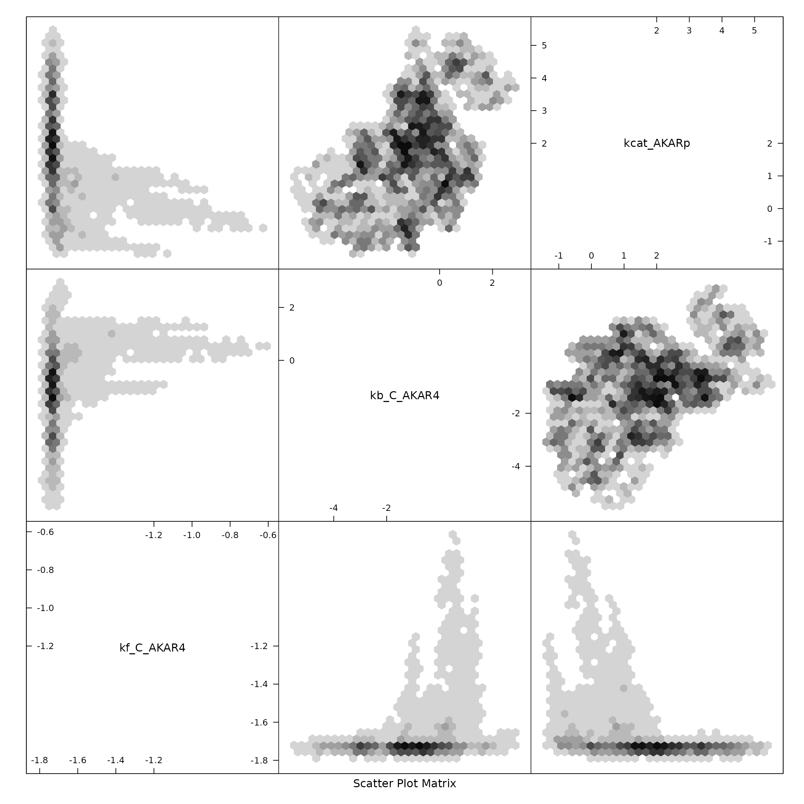

AKAR4 with MCMC
AKAR4cl.RmdAKAR4 with Conservation Law Analysis
This is a version of the AKAR4 model that was built with conservation law analysis turned on when processing the SBtab content to produce the vector field file (vf). This has a downstream effect on the R and C code.
Loading Model and Data
We load the SBtab content from the tsv files to extract the data from it:
modelFiles <- uqsa_example("AKAR4cl",pattern="[.]tsv$",full.names=TRUE)
SBtab <- SBtabVFGEN::sbtab_from_tsv(modelFiles)
#> [tsv] file[1] «/home/andrei/R/library/uqsa/extdata/AKAR4cl/100nM.tsv» belongs to Document «AKAR4cl»
#> I'll take this as the Model Name.The next block will load a series of functions: AKAR4cl_vf, AKAR4cl_jac, etc.; it also loads the model variable: a list of the same functions with generic names.
source(uqsa_example("AKAR4cl",pat="^AKAR4cl[.]R$"))
names(model)
#> [1] "vf" "jac" "jacp" "func" "funcJac" "funcJacp" "init"
#> [8] "par" "name"
# compile
modelName <- checkModel("AKAR4cl",uqsa_example("AKAR4cl",pat="_gvf[.]c$"))
#> building a shared library from c source, and using GSL odeiv2 as backend (pkg-config is used here).
#> cc -shared -fPIC `pkg-config --cflags gsl` -o './AKAR4cl.so' '/home/andrei/R/library/uqsa/extdata/AKAR4cl/AKAR4cl_gvf.c' `pkg-config --libs gsl`Data and Experiments
The experiments variable contains a description of how to simulate an experiment but also the data that this simulation should try replicate. Since the model was build with conservation law analysis, we need to load the results of this analysis, to adjust the simulation instructions:
load(uqsa_example("AKAR4cl",pat="^ConservationLaws[.]RData$"))
print(ConLaw$Text)
#> [1] "AKAR4_C_ConservedConst = AKAR4_C+1*C"
#> [2] "AKAR4_ConservedConst = AKAR4+1*AKAR4p-1*C"
experiments <- sbtab.data(SBtab,ConLaw)The default values for the ODE model parameters, taking the new inputs into account:
Prior
Scale to determine prior values, a default parameter range:
defRange <- 2 # log-10 space
dprior <- dNormalPrior(mean=log10(parVal),sd=rep(defRange,length(parVal)))
rprior <- rNormalPrior(mean=log10(parVal),sd=rep(defRange,length(parVal)))
print(dprior(log10(parVal)))
#> [1] 0.007936704MCMC related Model Functions
Here we construct several closures needed for MCMC
Simulations
sensApprox <- sensitivityEquilibriumApproximation(experiments, model, log10ParMap, log10ParMapJac)
simulate <- simulator.c(experiments,modelName,log10ParMap,noise=FALSE,sensApprox)
y <- simulate(log10(parVal))
plot(experiments[[1]]$outputTimes,as.numeric(y[[1]]$state[1,,1]),xlab='time',ylab='AKAR4p', main='state',type='l')Likelihood related Functions
llf <- logLikelihood(experiments)
gradLL <- gradLogLikelihood(model,experiments, parMap=log10ParMap, parMapJac=log10ParMapJac)
fiIn <- fisherInformation(model, experiments, parMap=log10ParMap)
fiPrior <- solve(diag(defRange, length(parVal)))
print(fiPrior) # constant matrix
#> [,1] [,2] [,3]
#> [1,] 0.5 0.0 0.0
#> [2,] 0.0 0.5 0.0
#> [3,] 0.0 0.0 0.5Maerkov Chain Update Function
update <- mcmcUpdate(simulate=simulate,
experiments=experiments,
model=model,
logLikelihood=llf,
gradLogLikelihood=gradLL,
fisherInformation=fiIn,
fisherInformationPrior=fiPrior,
dprior=dprior)Find a Good SMMALA step size:
Here, we construct an mcmc function derived from the update function, initialize the Markov chain and start several chains in parallel:
m <- mcmc(update) # a Markov chain
h <- 1e-1 # step size guess
nChains <- 4We define an adjustment factor L(a) for h, based on the acceptance rate a of a test chain of size N (a good value for a test chain is around 100). The factor L(a) increases h if a is above the target acceptance of 25%.
accTarget <- 0.25
L <- function(a) { (1.0 / (1.0+exp(-(a-accTarget)/0.1))) + 0.5 }
N <- 100
start_time <- Sys.time()
x <- log10(parVal)
# do the adjustment of h a few times
options(mc.cores = parallel::detectCores())
for (j in seq(6)){
cat("adjusting step size: ",h," \n");
x <- mcmcInit(1.0,x,simulate,dprior,llf,gradLL,fiIn)
Sample <- m(x,N,eps=h)
a <- attr(Sample,"acceptanceRate")
cat("acceptance: ",a*100," %\n")
h <- h * L(a)
x <- as.numeric(tail(Sample,1))
}
#> adjusting step size: 0.1
#> acceptance: 27 %
#> adjusting step size: 0.1049834
#> acceptance: 29 %
#> adjusting step size: 0.115344
#> acceptance: 18 %
#> adjusting step size: 0.09594452
#> acceptance: 28 %
#> adjusting step size: 0.1030869
#> acceptance: 19 %
#> adjusting step size: 0.08807162
#> acceptance: 29 %
plot(attr(Sample,"logLikelihood"),xlab="iteration",ylab="log-likelihood",main="small Sample to find a good step size",type='l')
cat("final step size: ",h,"\n")
#> final step size: 0.0967632
cat("finished adjusting after",difftime(Sys.time(),start_time,units="sec")," seconds\n")
#> finished adjusting after 30.12104 secondsInitialize parallel execution, with 4 processes, but 16 Markov chains.
n <- 16 # cluster size
nChains <- 16
options(mc.cores = parallel::detectCores() %/% n)
cl <- parallel::makeForkCluster(n)
parallel::clusterSetRNGStream(cl, 1337) # seeding random numbers sequences
betas <- seq(1,0,length.out=nChains)^2
parMCMC <- lapply(betas,mcmcInit,parMCMC=log10(parVal),simulate=simulate,dprior=dprior,logLikelihood=llf,gradLogLikelihood=gradLL,fisherInformation=fiIn)Next, we perform the sampling in parallel, but also swap positions every once in a while:
start_time <- Sys.time() # measure sampling time
Sample <- NULL
for (i in seq(100)){ # 16 chains, 4 workers
s <- parallel::parLapply(cl, parMCMC, m, N=100, eps=h)
parMCMC <- lapply(s,attr,which="lastPoint")
parMCMC <- swap_points(parMCMC)
if (i>2) {
Sample <- rbind(Sample,s[[1]])
}
}
colnames(Sample) <- names(parVal)
time_ = difftime(Sys.time(),start_time,units="sec")
parallel::stopCluster(cl)
cat("finished sampling after",time_," seconds\n")
#> finished sampling after 650.7688 secondsResults
The final sample looks like this:
print(tail(Sample,10))
#> kf_C_AKAR4 kb_C_AKAR4 kcat_AKARp
#> [39991,] -1.748616 -1.226415 2.167335
#> [39992,] -1.748616 -1.226415 2.167335
#> [39993,] -1.748616 -1.226415 2.167335
#> [39994,] -1.748616 -1.226415 2.167335
#> [39995,] -1.728994 -1.217590 2.261970
#> [39996,] -1.745386 -1.282003 2.287830
#> [39997,] -1.745386 -1.282003 2.287830
#> [39998,] -1.745386 -1.282003 2.287830
#> [39999,] -1.745386 -1.282003 2.287830
#> [40000,] -1.745386 -1.282003 2.287830
hexbin::hexplom(Sample)